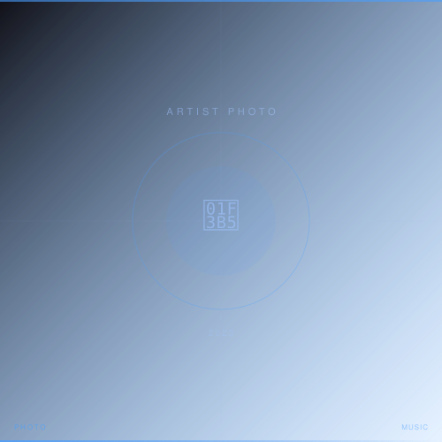

2023 / MUSIC / ARTIST
アーティスト アー写・キービジュアル撮影 (音楽ジャンル)
独立系アーティスト
音楽ジャンルを主軸に活動するアーティストのキービジュアル・アーティスト写真（アー写）撮影。「1枚で決めにいく」という哲学のもと、アーティストの音楽性と佇まいを白ホリスタジオで凝縮した作品制作を行っている。
担当：スチール撮影 / ライティング設計 / デジタル現像
Leica SL2, APO-SUMMICRON-SL 75mm f/2 ASPH.
- Photographer
- 森川亮太 (M.RYOHTA / @m_ichirinka)
Instagram: @m_ichirinka (2023.03.15) ↗
